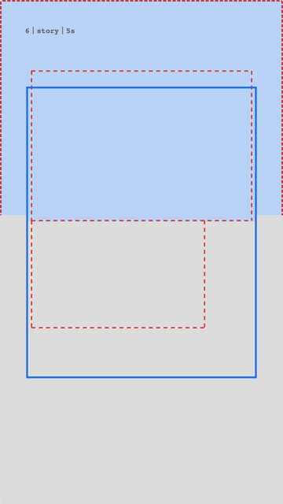

story 限動波浪字
限時動態（SB-K9）；可留投票貼紙位置
- 字級
- 標題 132px
- 動態
- 每個字母波浪彈入
- 畫面層
- 主題 organic 自帶色塊；其他主題必填
| 欄位 | 型別 | 上限 | 說明 | |
|---|---|---|---|---|
title | 字串（空格分詞） | 必填 | ≤5 詞 | |
text | 字串 | ≤60 字元 | ||
poll | 字串 | App 內貼紙的位置；算圖時留空 | ||
fine | 字串 | 合規小字 |
範例 JSON（直接貼進 card.json 的 beats）
{
"layout": "story",
"seconds": 5,
"title": "New post today",
"text": "Three numbers, thirty years.",
"visual": {
"type": "glow"
}
}